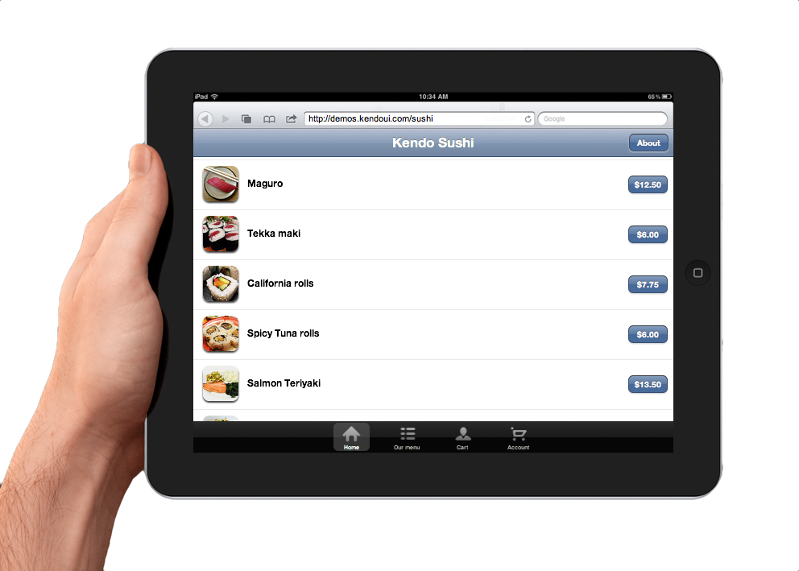

An interactive presentation
Kendo UI
Web
Kendo UI
DataViz
Kendo UI
Mobile (CTP)
Kendo UI solves an important problem faced by JavaScript and HTML5 developers. It delivers a unified framework backed by professional support. It's easier to learn, easier to upgrade, ultimately making it easier to build apps with HTML5.
Mobile-specific UI widgets that automatically adapt to the look-and-feel of the host device.
Your apps always look native.

<!DOCTYPE html>
<html lang="en">
<head>
<meta charset="utf-8" />
<title>My Kendo UI App</title>
<!--Base CSS styles and primitives-->
<link href="styles/kendo.common.css" rel="stylesheet"/>
<!--Theme specific styles-->
<link href="styles/kendo.kendo.css" rel="stylesheet"/>
</head>
<body>
...
<script src="//ajax.googleapis.com/ajax/libs/jquery/1.7.0/jquery.min.js"></script>
<script src="scripts/kendo.all.min.js"></script>
</body>
</html>
Kendo UI CDN available. Be sure to review license before using.
Custom script builder available to commercial license holders
Visit the official Kendo UI Web online demos for hundreds of additional examples of Kendo UI Web in action
<input id="myWidget" />
$(function(){
$("#myWidget").kendoWIDGETNAME();//ex: kendoSlider();
});
Basic usage bound to local data
<input id="txtAc" />
<script type="text/javascript">
$(function(){
var data = ["Animal","Antilope","Bird","Bath","Bellow"];
$("#txtAc").kendoAutoComplete(data);
});
</script>
Enter a value:
Binding to remote data with Kendo UI Data Source
var ds = new kendo.data.DataSource({
transport:{
read:{
url:"http://query.yahooapis.com/v1/public/yql?&format=json",
//...Configure DataSource to bind to Yahoo Music JSON API
});
$("#txtAcRd").kendoAutoComplete({
minLength: 3,
dataTextField: "title",
filter:"contains",
dataSource:ds
});
Type the name of a song:
While not highly-functional widgets, Kendo UI's CSS framework covers buttons. Easily make all buttons match other Kendo UI widgets using simple CSS classes.
<button class="k-button">I'm a Button</button>
<input type="submit" class="k-button" value="I'm a Submit" />
<a href="#" class="k-button">I'm a Link</a>
Simple configuration
<div id="kCalendar"></div>
<script type="text/javascript">
$(function(){
$("#kCalendar").kendoCalendar({
min: new Date(2000,1,1),
max: new Date(2005,1,1),
start: "decade"
});
});
</script>
Items can be initialized from HTML or JSON
<select id="kCombo">
<option value="1">@toddanglin</option>
<option value="2">@kendoui</option>
<option value="3">@telerik</option>
</select>
<script type="text/javascript">
$(function() {
$("#kCombo").kendoComboBox();
});
</script>
Similar to Calendar, with an Input
<input id="kPicker"/>
<script type="text/javascript">
$(function(){
$("#kPicker").kendoDatePicker({
min: new Date(2000,1,1),
max: new Date(2005,1,1),
value: "5/7/2002"
});
});
</script>
Like ComboBox, but no custom values allowed
<input id="kDropDownList" />
<script type="text/javascript">
$(function(){
var data = [{text:"@toddanglin",value:1},{text:"@kendoUI",value:2}];
$("#kDropDownList").kendoDropDownList(data);
});
</script>
Select a Twitter handle:
Supports sorting, paging, grouping, scrolling, keyboard nav, hierarchy, editing
<table id="kGrid1"></table>
<script type="text/javascript">
$(function(){
var data = [{"FirstName": "Todd","LastName": "Anglin","Twitter": "@toddanglin"},
...];
$("#kGrid1").kendoGrid({
pageable:true,
sortable:true,
navigatable:true,
selectable: "row",
height: 150,
columns:[
{field:"FirstName",title: "First Name"},
{field:"LastName",title:"Last Name"},
{field:"Twitter",title:"Twitter"}
],
dataSource:{
data: data,
pageSize:3
}
});
});
</script>
For many more Grid demos, visit the Kendo UI Web online demos.
Similar widgets, all generally configured from item lists
<ul id="kNav">
<li>Top Level 1</li>
<li>Top Level 2
<ul>
<li>Sub 2.1</li>
<li>Sub 2.2</li>
</ul>
</li>
<li>Top Level 3</li>
</ul>
<script type="text/javascript">
$(function() {
$("#kNav").kendoMenu(); //OR.. .kendoPanelBar() OR .kendoTabStrip()
});
</script>
Unlike Menus and PanelBar items, Tabs usually have associated content. To add tab content, just pair lists with DIVs.
<div id="kTabStrip">
<ul>
<li class="k-state-active">Top Level 1</li>
<li>Top Level 2</li>
<li>Top Level 3</li>
</ul>
<div>Content for the first tab!</div>
<div>Content for the SECOND tab.</div>
<div>(Content for the 3rd tab.)</div>
</div>
<script type="text/javascript">
$(function() {
$("#kTabStrip").kendoTabStrip();
});
</script>
Flexible, filtered input for any kind of numeric data
<input id="kNumeric" type="number" value="5" />
<script type="text/javascript">
$(function() {
$("#kNumeric").kendoNumericTextBox();
});
</script>
Just try to enter anything other than a number:
Format:
(Try changing the format to see the impact on the NumericTextBox)
Example Formats:
Use one input for a single slider, two for a range slider
<input id="kSlider" type="range" min="0" max="100" />
<div id="kRange">
<input type="range" />
<input type="range" />
</div>
<script type="text/javascript">
$(function() {
$("#kSlider").kendoSlider();
$("#kRange").kendoRangeSlider();
});
</script>
Dynamically adjustable, resizable, collapisble layouts
<div id="kSplit">
<div id="kVSplit">
<div>Vertical Split 1</div>
<div>Vertical Split 2</div>
</div>
<div>Horizontal Split 2</div>
</div>
<script type="text/javascript">
$(function() {
$("#kSplit").kendoSplitter({panes:[{collapsible:true}]});
$("#kVSplit").kendoSplitter({orientation:"vertical"});
});
</script>
Like DatePiker, but for time
<input type="time" id="kTime" />
<script type="text/javascript">
$(function() {
$("#kTime").kendoTimePicker({interval:"30" /*min*/});
});
</script>
Pick a time:
Hierarchal data display with drag-and-drop reordering
<ul id="kTreeview">
<li>Item 1
<ul>
<li>Item 1.1</li>
<li>Item 1.2</li>
</ul>
</li>
<li>Item 2</li>
</ul>
<script type="text/javascript">
$(function() {
$("#kTreeview").kendoTreeView({dragAndDrop:true});
});
</script>
Not a formal Kendo UI widget, but an useful, reusable CSS class.
<div class="k-tooltip">
I'm a Kendo UI Tool Tip!
<!--Option "callout" arrow on tool tip-->
<div class="k-callout k-callout-s"></div>
</div>
Hover over this area to see the tip!
*NOTE: The ToolTip currently only provides styling- no API or behavior. To add behavior, additional JS is required.
Async, multi-file upload with progress tracking & file drag-and-drop
<input name="kFiles" id="kFiles" type="file" />
<script type="text/javascript">
$(function() {
$("#kFiles").kendoUpload({
async: {saveUrl: "#", removeUrl: "#", autoUpload: false}
});
});
</script>
Draggable, resizable, closable, modal-able floating Window widget
<p id="kWin">
<!--Window Content-->
</p>
<script type="text/javascript">
$(function() {
$("#kWin").kendoWindow({title:"My Window",width:400});
});
</script>
Windows can be initialized from virtually any HTML element. And
they can contain virtually any content!
Completely control allowed behaviors with the API.
Use the Data Source to abstract binding to local data collections
var localData = [{name:"Todd"},{name:"Atanas"},{name:"Burke"},{name:"John"}];
var ds = new kendo.data.DataSource({
data:localData
});
//Load Data
ds.read();
//Then to operate on the data, we can do things like...
ds.query({sort:{field:"name", dir:"desc"}});
Bind to remote data services and let the Data Source automatically handle paging, sorting, filtering, etc.
var ds = new kendo.data.DataSource({
pageSize:5,
transport:{
read:"http://query.yahooapis.com/v1/public/...."
},
schema:{
data:"query.results.Track",
total:"query.count"
}
});
To use the Data Source's ability to track and sync changes to your JS objects, you must define your model.
//Some local data
var localData = [{id:1,name:"Todd",twitter:"@toddanglin"},{id:2,name:"Kendo",twitter:"@kendoUI"}];
//Define the model (Other model properties will be automatically inherited)
var Person = kendo.data.Model.define({id:"id"});
//Configure the Data Source to use the model
var ds = new kendo.data.DataSource({
data: localData,
schema:{
model: Person
}
});
//Then to find model objects, you can use code like...
ds.get(id);
Click on an item to look-up the model object in the data source:
Data Source is a vast and powerful component of Kendo UI Web.
To learn more about using the Data Source for things like CRUD operations, server-side data syncing, and more, check-out these resource:
Cross-browser, rule-based validation for HTML forms
<form id="kValForm" style="font-size:16px;">
Email: <input type="email" required class="k-widget" /><br />
Name: <input type="text" required class="k-input" /><br />
Age: <input type="number" class="k-input" /><br />
<input type="submit" value="Sumbit" class="k-button" />
</form>
<script type="text/javascript">
$(function() {
$("#kValForm").kendoValidator();
});
</script>
Take control over complex validation by adding custom rules
<form id="kValCustom">
Email: <input type="email" id="email" name="email" required /><br />
Verify Email: <input type="email" id="vEmail" name="vemail" /><br />
<input type="submit" value="Submit" class="k-button" />
</form>
<script type="text/javascript">
$(function() {
$("#kValCustom").kendoValidator({
rules:{
emailMatch: function(input) {
if(!input.is("[name=vemail]")) return true;
return (input.val() == $("[name=email]").val());
}
},
messages:{
emailMatch:"Email must match"
}
});
});
</script>
Kendo UI Templates are built for speed.
The syntax is simple and the rendering performance is fast.
var template = kendo.template("Hello, #= firstName # #= lastName #");
<script id="myTemplate" type="text/x-kendo-template">
Hello, #= firstName # #= lastName #
</script>
//Then, just like inline templates...
var template = kendo.template($("#myTemplate").html());
Simple drag-and-drop API that works with mouse AND touch input!
<div id="kDrag">
Drag Me
</div>
<div id="kDrop">
DROP HERE
</div>
<script type="text/javascript">
$(function() {
$("#kDrag").kendoDraggable({
hint:function(){ return $("#kDrag").clone().css("opacity",".5"); }
});
$("#kDrop").kendoDropTarget({
dragenter:function() { $("#kDrop").text("Drop now!"); },
dragleave:function() { $("#kDrop").text("DROP HERE"); },
drop:function() { $("#kDrop").text("Yay!"); }
});
});
</script>
Limit specific draggable items to specific drop targets with Groups
<div id="kDragA">Pizza</div><div id="kDragB">Blue</div>
<div id="kDropA">Food</div><div id="kDropB">Colors</div>
<script type="text/javascript">
$(function() {
$("#kDragA").kendoDraggable({group:"food"});
$("#kDropA").kendoDropTarget({group:"food"});
$("#kDragB").kendoDraggable({group:"colors"});
$("#kDropB").kendoDropTarget({group:"colors"});
});
</script>
Localize Kendo UI widgets to specific culture formats (number format, date format, etc)
Widgets that depend on culture:
Hundreds of culture formats included in Kendo UI Web
Changing cultures is a simple two-step process:
<script src="kendo.culture.en-GB.js" />
<script type="text/javascript">
kendo.culture("en-GB");
</script>
Chart Type:
<div id="kChart1"></div>
<script type="text/javascript">
$(function(){
$("#kChart1").kendoChart({
title: {text: "Q3 2011 Browser Share"},
legend: {position: "bottom"},
dataSource: {
data: data
},
series: [{
type: "pie",
field: "Share",
categoryField: "Browser",
startAngle: 160
}],
categoryAxis:{field: "Browser"},
plotArea:{background:"#BBB"},
chartArea:{background:"#BBB"},
tooltip: {
visible: true,
template: "${ category } - ${ value }%"
}
});
});
</script>
<div data-role="view" id="index" data-url="/" data-animation="slide">
<header data-role="header">
<div data-role="navbar" class="km-navbar">
<span data-role="view-title">My App</span>
</div>
</header>
<div data-role="content">
...
</div>
<footer data-role="footer" data-id="default">
<div data-role="tabstrip" data-selected-index="0">
...
</div>
</footer>
</div>
Kendo UI Mobile is currently available as an online preview.
Beta1 will ship in early 2012, followed by RTW in March 2012.